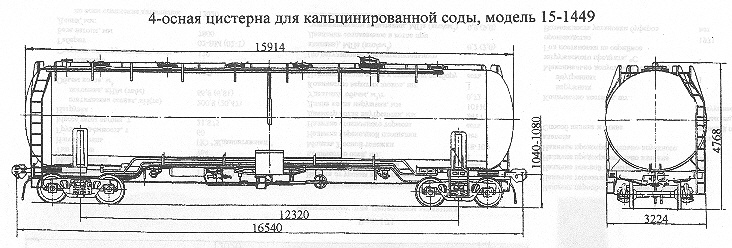

Назначение: для перевозки кальцинированной соды
Параметры
| Номер проекта | 1449.00.000СБ |
| Технические условия | ТУ 24.00.6221-89 |
| Модель вагона | 15-1449 |
| Тип вагона | |
| Изготовитель | Концерн "Азовмаш" |
| Грузоподъемность, т | 62 |
| Масса тары вагона, т | 31 |
| Нагрузка: статическая осевая, кН(тс) |
228(23,25) |
| погонная, кН/м(тс/м) | 55,1(5,65) |
| Объем котла, м3 | 105 |
| Скорость конструкционная, км/ч | 120 |
| Габарит | 1-Т |
| База вагона, мм | 12320 |
| Длина, мм: по осям сцепления автосцепок |
16540 |
| по концевым балкам рамы | 15320 |
| Высота от уровня верха головок рельсов максимальная, мм | 4768 |
| Количество осей, шт. | 4 |
| Модель 2-осной тележки | 18-100 |
| Наличие переходной площадки | нет |
| Диаметр котла внутренний,мм | 3200 |
| Длина котла наружная,мм | 15914 |
| Ширина максимальная,мм | 3224 |
| Удельный объем, м3/т | 1,69 |
| Количество загрузочных люков, шт. | 5 и 1 лазовый |
| Количество аэролотков, шт.: малых |
4 |
| больших | 4 |
| Давление создаваемое в котле при гидравлическом испытании, МПа(кгс/см2) | 0,3(3,0) |
| Диаметр, мм: загрузочного люка |
400 |
| разгрузочного патрубка | 150 |
| Угол наклона откоса к горизонту, град | 45 |
| Количество секций котла, шт. | 1 |
| Наличие парообогревательной рубашки | нет |
| Наличие теплоизоляции | нет |
| Наличие теневой защиты | нет |
| Количество лестниц, шт.: наружных |
2 |
| Максимально допустимая температура загружаемого продукта, °C | +80 |
| Год постановки на серийное производство | 1989 |
| Возможность установки буфера | нет |